The 27 second demo, no sound. Recorded frame by frame in GNOME Shell running Vitre and played back at true speed. Download the MP4 (3.4 MB).
What the demo shows
- The Vitre logo drops out of a glass bar.
- The logo menu stretches out of the top bar.
- Control Center opens out of its icon.
- A message banner, then Notification Center.
- Apps in the Stage strip fly out of their thumbnails.
- Windows slide into the Dock and back out.
- Three fingers up spreads the windows over the blurred desktop.
See it move
Every top bar panel opens the same way. The glass stretches out of whatever you click and stays attached until it lands. These clips play at normal speed.
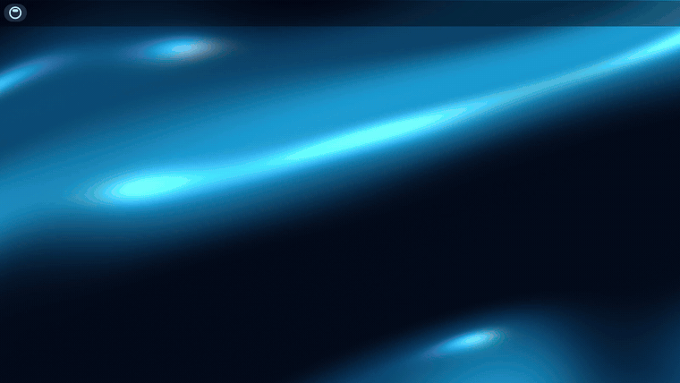
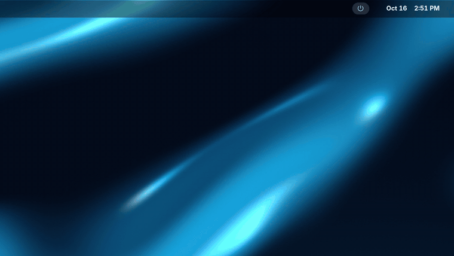
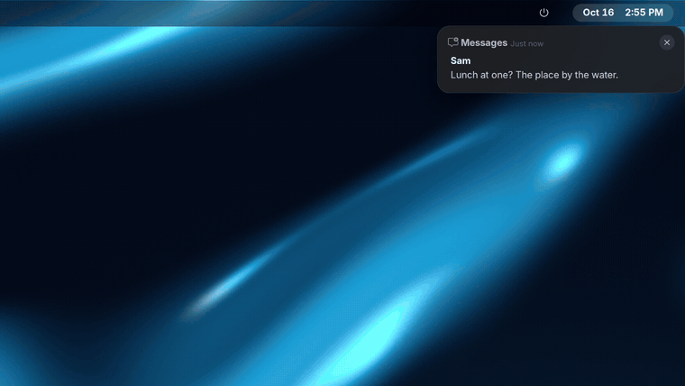
Screenshots
Taken on the Vitre Drift wallpaper. Select any picture to open it at full size.

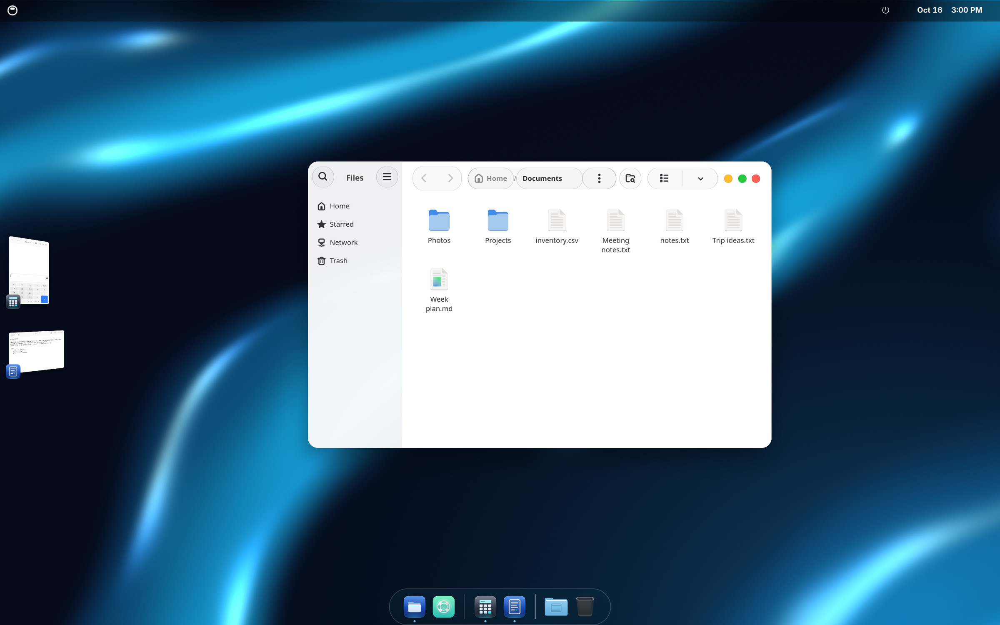

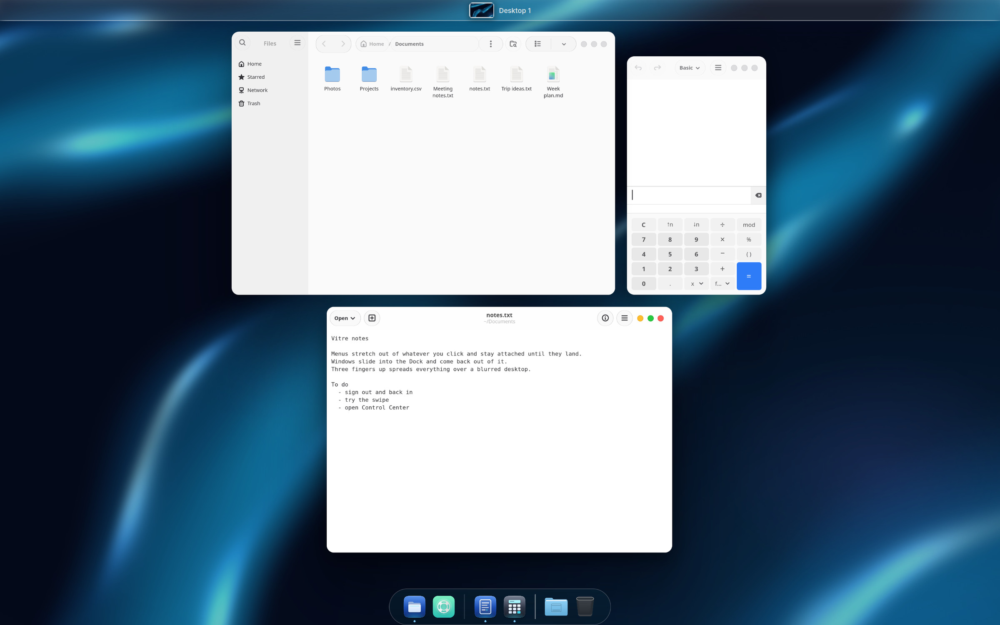

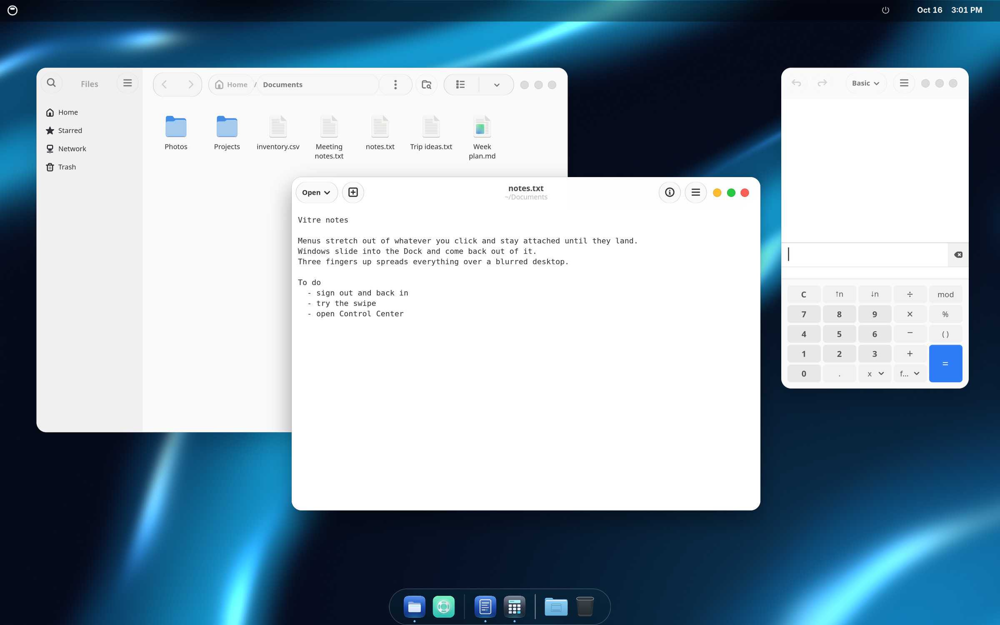

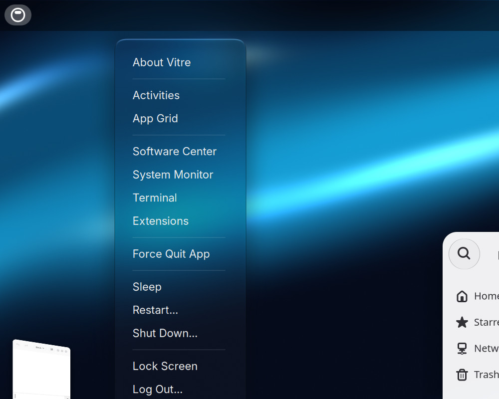

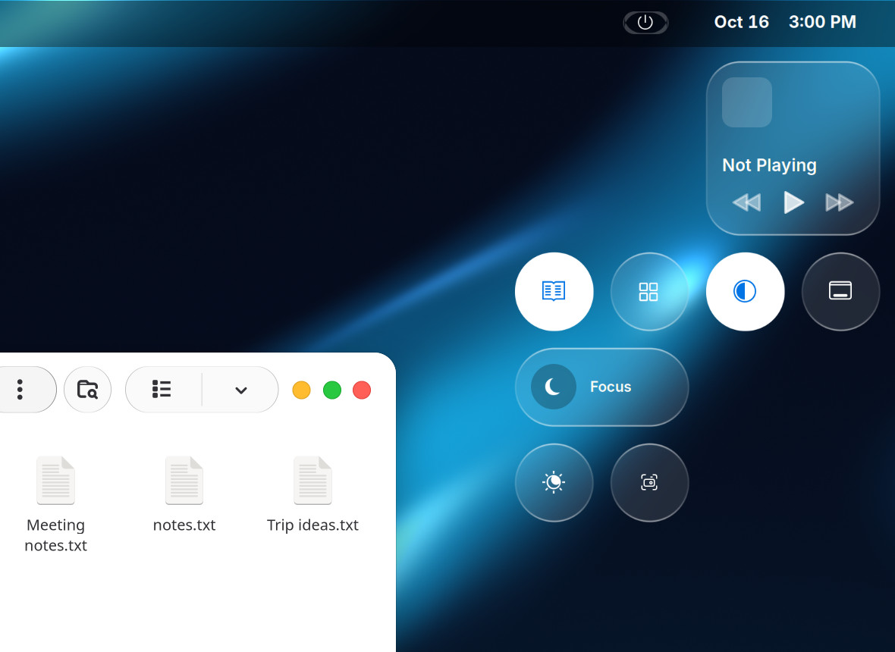

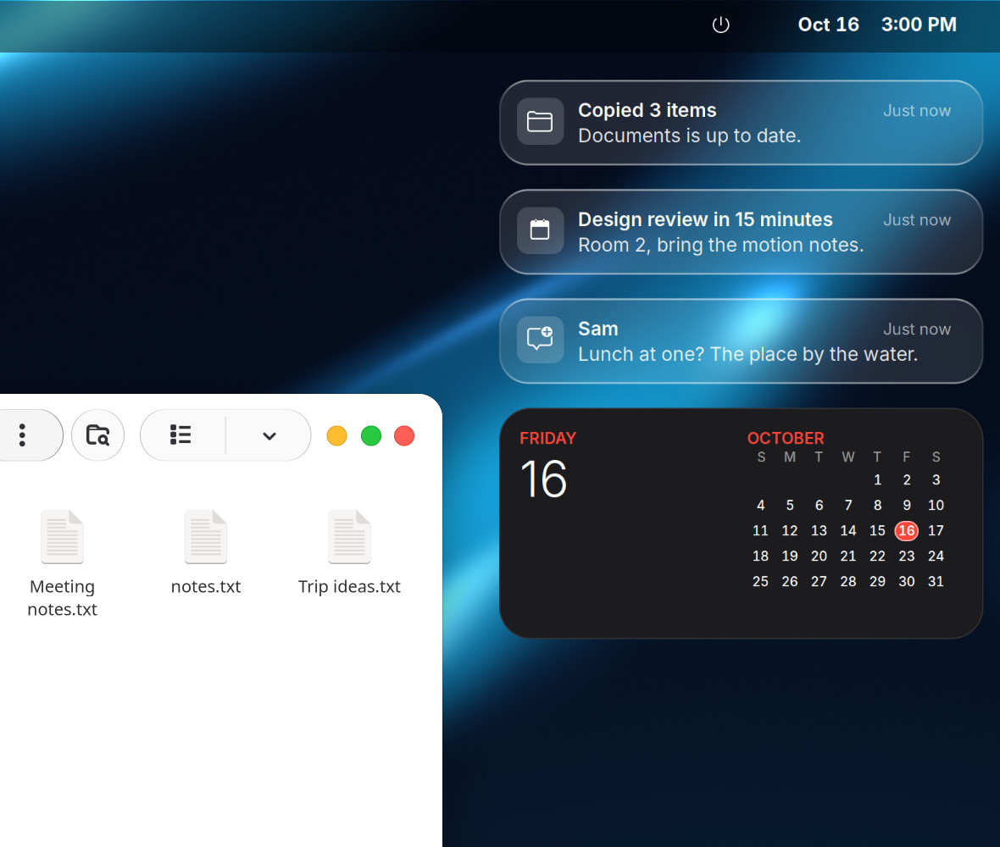

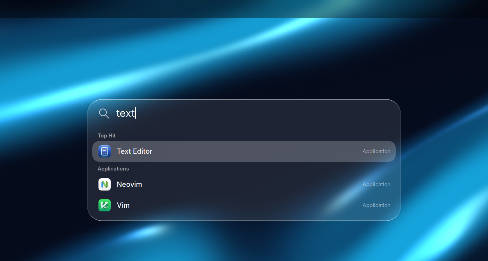

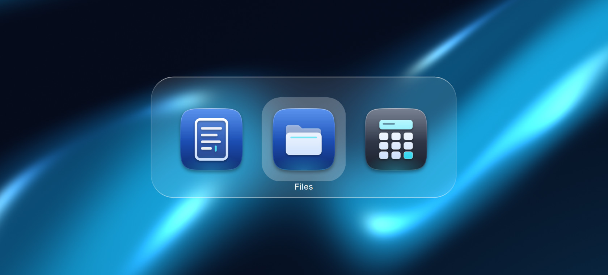

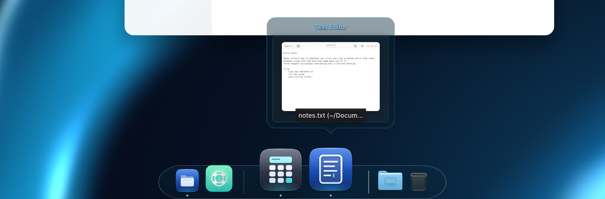

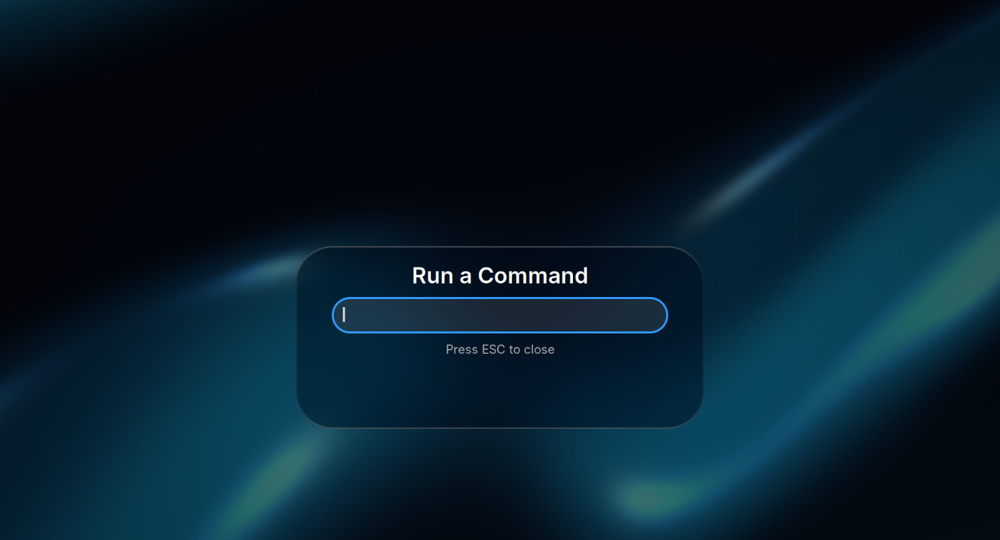
What you get
A set of GNOME Shell extensions, a theme, icons, a cursor and wallpapers that work together. Most of the work went into how things move.
Glass that stretches
Top bar menus, Control Center, Notification Center, the volume bar, app menus, Dock menus, system dialogs and the lock screen all open the same way. Closing plays it back.
Windows that fly
A window you minimize slides into its Dock icon and flies back out when you restore it. New windows grow in and closing windows shrink away.
Stage
Your other apps wait in a strip on the left. Click one and it slides out of its thumbnail into place, while the window you were using flies back into the strip.
Swipe up
Three fingers up spreads your windows over a dimmed, blurred desktop, with your workspaces in a glass bar at the top.
Search
Super+Space opens a search bar for apps, files and settings, with an Apps view.
Switcher
Super+Tab and Alt+Tab show a glass app and window switcher.
Dock
A magnifying Dock with window previews that stay open while you move onto them. Vitre Dock is a fork of Dhruva with Vitre's changes.
The look
The Vitre-Glass theme for apps and the shell, Vitre icons, a cursor with a glass busy spinner and the Vitre Drift wallpapers.
Vitre follows GNOME's animation setting. With animations off or reduced motion on, GNOME's own behaviour runs.
Install
Needs GNOME Shell 51 on Wayland. The installer puts everything in your home folder and needs no root.
Install
git clone https://github.com/chrismteryli/vitre.git cd vitre./install.shThen sign out and back in.
Uninstall
./uninstall.shRun it from the same folder, then sign out and back in. It puts back what the installer backed up.
./install.sh --checkonly checks your system and changes nothing.- The installer backs up your settings and every file it replaces. Each uninstall undoes the most recent install, so if you installed twice, run it twice.
- It turns off the Ubuntu Dock and extensions that clash with Vitre, like Dash to Dock. It also moves the keyboard layout switch off Super+Space so Search can use it. If you switch layouts with Super+Space, pick a new shortcut in Settings.
- The login screen and boot splash are optional and need root, so they have their own installer in
system/. Run./system/install-system.sh --checkfirst. It looks at your system and changes nothing. - If something breaks,
./vitre-info.shprints what a bug report needs and changes nothing.
Requirements and known limits
This is a first release. Please report what breaks.
Requirements
- GNOME Shell 51 on Wayland.
- Built and tested on one arm64 laptop running Ubuntu 26.10.
- x86_64 runs the same JavaScript and CSS, but nobody has tested it there yet.
- The Inter and JetBrains Mono fonts. The installer prints the package names if they are missing.
- An internet connection during install, for the base icon theme. To install offline, point
VITRE_ICONS_SRCat a checkout of MacTahoe-icon-theme.
Known limits
- Apps that draw their own window buttons, like many Electron apps, keep them.
- Brave: set Settings, Appearance, Theme to GTK to get Vitre's window buttons.
- GNOME Shell pauses for a moment about every ten seconds while it cleans up memory. You may see a skipped frame now and then.
- The first time you open each top bar panel after login can hitch once. Vitre draws them in the background after login to avoid it.
- The login screen and boot splash installer is new. So far it has only been run with the
--checkoption.
Credits and licence
Vitre is free software under the GPL-3.0. It builds on Dhruva, Blur my Shell, Just Perfection, Liquid Glass, Logo Menu, Rounded Window Corners Reborn, and the MacTahoe and WhiteSur themes by Vince Liuice. Each keeps its own licence.
Inter and JetBrains Mono come from your distribution. The Vitre extensions, wallpapers, logo, installer and settings are original work.